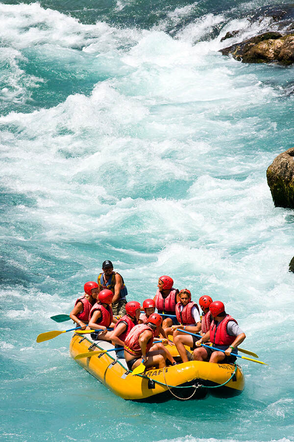

"Conquer the Current." Company Purpose To connect people with the raw power of the river through unforgettable, adrenaline-pumping water adventures. Mission Statement "To deliver safe, exhilarating river expeditions by combining elite guiding, top-tier safety standards, and a fierce commitment to environmental stewardship." The Company Creed The River Dictates: Safety and respect for the water's power always come first. Paddle as One: We succeed through absolute teamwork, both on and off the water. Leave It Better: We protect and clean every river canyon we visit. Embrace the Splash: We tackle challenges head-on with enthusiasm and grit.

Whitewater Rafting
History
Founded in 1993 by a small crew of veteran river guides, Whitewater Rafting began with just three patched-up rafts and a passion for the rapids of [River Name]. Operating out of a canvas tent at the trailhead, the team set out to offer authentic, high-energy river expeditions that treated guests like crew, not passengers.